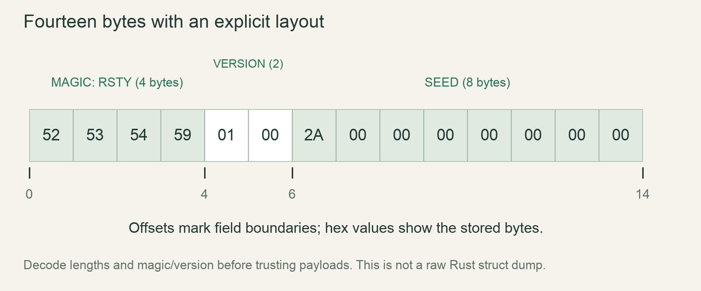

M4 / A persistent worldLesson 74 of 100 · ~5 min reading + build time
Define a versioned binary save format
Encode a small explicit versioned header and reject truncated or unsupported input before using it.
Previously: Return and propagate recoverable errors. Keep that working result available before starting this lesson.
Why we need this now
An in-memory struct is a convenient Rust value, but its layout is not automatically a portable save protocol. We need byte meanings that future readers can understand even after the implementation changes.
Your result: Encode a small explicit versioned header and reject truncated or unsupported input before using it.

01Decide what every byte means
Start with a tiny header rather than serializing the whole world. Our teaching header has four magic bytes, a little-endian format version and a seed. Magic distinguishes this file family; the version selects a decoding contract; the seed is data interpreted under that contract.
Write offsets on paper before code: bytes 0 through 3 are RSTY, 4 through 5 are version 1, and 6 through 13 are a u64 seed. That totals 14 bytes. Explicit byte order avoids depending on the host machine’s endianness.
02Validate shape before conversion
A loader first checks exact length in the small example, then magic, then version, and only then decodes payload fields. The order prevents out-of-bounds slicing and makes unsupported input fail before allocating world data. In a larger format validate each declared length against configured maximums before allocation.
Do not cast arbitrary bytes into Material or a Rust struct. Invalid enum discriminants and layout padding are not a public format. Encode material IDs deliberately and validate each accepted ID during decode.
03Keep versions about different promises
The header here carries only a format version. The full world also needs generator version, tick counters, changed regions and the other saved-state inventory. A format version answers how to read bytes. A generator version answers how to regenerate absent chunks. One number cannot safely stand for both.
Build the codec as a pure byte-to-value function returning Result. File reading belongs outside it. This lets tests supply truncated buffers directly without creating temporary files or opening the game.
04Prove equality and rejection
Round-trip equality means decoding our encoding returns the original metadata. It does not prove corrupt data is rejected; add negative cases for every validation boundary. Change one magic byte, try a future version and truncate at every byte position.
In the game, migrate this experiment into save/codec.rs and add payload-specific encoding. Keep a tiny known byte fixture in tests so an accidental endian or field-order change becomes obvious. Before a public format change, either retain the old reader or implement an explicit migration.
Read → predict → run → change
Walk through the working example
Complete focused experiment — save as examples/lesson_074.rs, then run cargo run --example lesson_074 from game/.
Download this worked example ↧
const HEADER_LEN: usize = 14;
fn encode(seed: u64) -> Vec<u8> {
let mut bytes = Vec::with_capacity(HEADER_LEN);
bytes.extend_from_slice(b"RSTY");
bytes.extend_from_slice(&1_u16.to_le_bytes());
bytes.extend_from_slice(&seed.to_le_bytes());
bytes
}
fn decode(bytes: &[u8]) -> Result<u64, &'static str> {
if bytes.len() != HEADER_LEN { return Err("invalid header length"); }
if &bytes[0..4] != b"RSTY" { return Err("wrong file family"); }
let version = u16::from_le_bytes([bytes[4],bytes[5]]);
if version != 1 { return Err("unsupported format version"); }
let mut seed = [0_u8;8];
seed.copy_from_slice(&bytes[6..14]);
Ok(u64::from_le_bytes(seed))
}
fn main() {
let bytes = encode(42);
assert_eq!(bytes.len(),14);
assert_eq!(decode(&bytes),Ok(42));
for end in 0..14 { assert!(decode(&bytes[..end]).is_err()); }
println!("header round-trip and truncation checks pass");
}Read what each part does
- All slices are reached only after the length check.
- to_le_bytes/from_le_bytes define the file byte order independently of native layout.
- This minimal format is a worked codec experiment; do not use it to replace the full world-state inventory.
Expected result
header round-trip and truncation checks passExact version numbers, paths and compiler wording may differ. Compare the behavior and file locations, not incidental output formatting.
Prediction · repair · transfer
Exercises you actually do
Write a prediction or make an attempt before opening a solution. Use the hint if stuck; then compare reasoning and verify with the stated check. A different implementation is fine when it satisfies the same contract.
Predict a field
What are the eight seed bytes for seed 42?
Need a hint?
The least-significant byte comes first in little-endian order.
Worked solution
The seed bytes are 42,0,0,0,0,0,0,0. Magic and version precede them. Print the encoded vector and identify the offsets.
How to verify your result
Your predicted bytes match the produced buffer.
Reject future data
Change version bytes to 2 and 0.
Need a hint?
Do not silently interpret unknown versions as version 1.
Worked solution
decode returns unsupported format version. Preserve the original buffer/file and choose a supported reader or explicit migration rather than rewriting it during rejection.
How to verify your result
The error path leaves the input unchanged.
Add a bounded payload length
Describe where a chunk count should be checked before allocating its cells.
Need a hint?
Check both a format limit and arithmetic overflow.
Worked solution
Decode the count, reject counts above the region limit, use checked multiplication for bytes required, and verify the buffer has that many bytes before allocation/copy.
How to verify your result
A huge count produces a small error without a huge allocation.
When it goes wrong
Start with the observed symptom. Change one assumption at a time instead of pasting fixes until the error disappears.
Round-trip works only on one machine
What is happening: The codec used native memory layout or byte order.
Try this: Encode each public field explicitly with a documented endian convention.
Truncated saves panic
What is happening: The decoder slices before validating length.
Try this: Check lengths before indexing every variable-length section.
Unknown material becomes a strange cell
What is happening: The reader accepts unchecked IDs.
Try this: Map explicit accepted byte values to Material and reject other values.
Explain it without the example
Why not write the raw in-memory struct bytes as the public format?
Reasoning to compare
Padding, layout and representation can change and may contain invalid states on decode. Explicit encoding defines what the file actually promises.
Self-check only: test a prediction or ask your tutor if anything still feels arbitrary.
Finish with evidence
A chunk survives a round-trip exactly and malformed input returns an error without giant allocation or panic.
Make one small variation without copying: predict it, run it and explain any difference. On another day, repeat one exercise from memory before starting the next lesson. Ask your tutor about any step you can execute but cannot explain.
This is an attempt marker, not a grade. Learning records are written only after demonstrated understanding.
Primary sources for this lesson
Use sources to verify the mechanism. The lesson itself supplies the instructions; the links are not a substitute for teaching them.